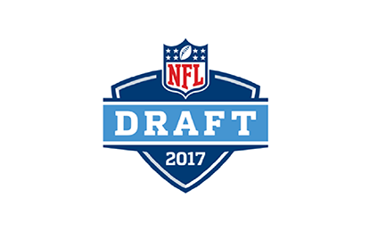

<md-sidenav-container fullscreen>
    <md-sidenav #sidenav mode="over">
        
        <ul>
        <li [routerLink]="['/players']" routerLinkActive="active"><span><md-icon>person</md-icon> Players</span></li>
        <li [routerLink]="['/teams']" routerLinkActive="active"><span><md-icon>flag</md-icon> Teams</span></li>
        <li [routerLink]="['/rounds']" routerLinkActive="active"><span><md-icon>format_list_numbered</md-icon> Rounds</span></li>
        <li [routerLink]="['/about']" routerLinkActive="active"><span><md-icon>info</md-icon> About</span></li>
        </ul>
    </md-sidenav>
    <md-toolbar color="primary">
        <button md-icon-button (click)="sidenav.toggle()">
      <md-icon>menu</md-icon>
    </button>
        <a class="ng-title-icon" href="http://angular.io" target="_blank"><i></i></a>
        <span>NFL Draft</span>
    </md-toolbar>
    <router-outlet></router-outlet>
</md-sidenav-container>